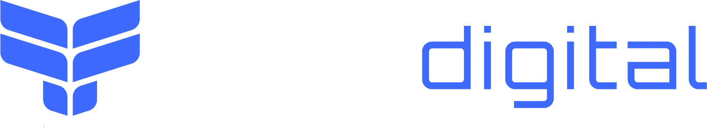

Projetos
Escolha um projeto
Filtre por país ou nicho, ou busque por especialista, curso, tema, módulo ou aula.
País
Nicho

Cada capa é um projeto real da Foes Digital: estratégia, copy, página de vendas, área de membros estilo Netflix e todas as artes. Escolha um e veja por dentro.
Projetos completos para ver por dentro: área de membros, cronograma das aulas, currículo de quem ensina e a primeira aula para assistir.
Filtre por país ou nicho, ou busque por especialista, curso, tema, módulo ou aula.